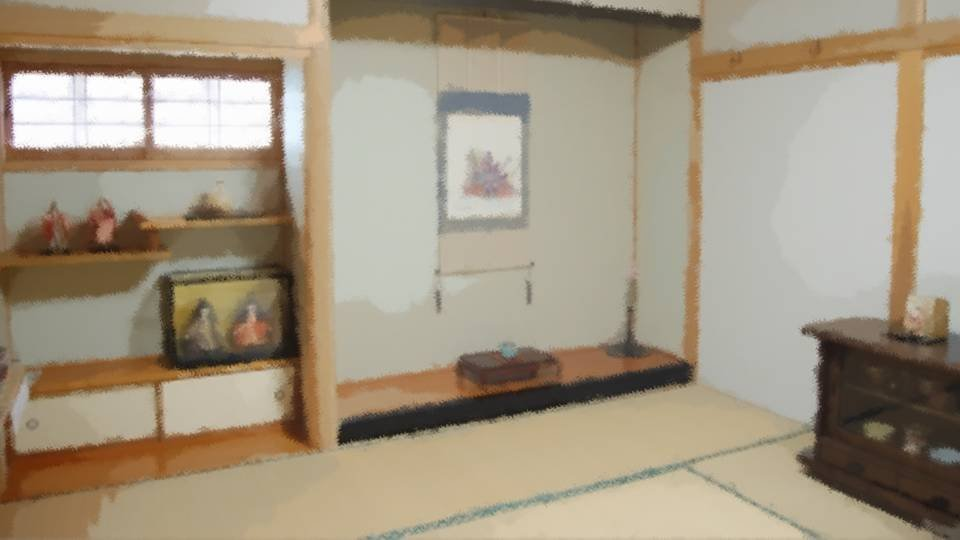
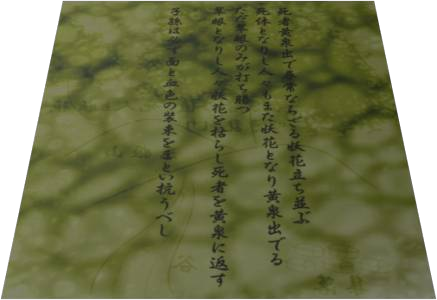

Script 00002026
"Excuse me."

"Ah, Erika-san. Sorry for calling you so late."
"Not at all... But this is unusual, isn't it? You being up at such an hour."
"I've had a lot on my mind."
"Mother..."
"Not at all... But this is unusual, isn't it? You being up at such an hour."
"I've had a lot on my mind."
"Mother..."
"Now, don't make such a gloomy face."
"But... Mother, this year you..."
"Yes, I turned 75. It'll be soon now, I expect."
"............"
"But... Mother, this year you..."
"Yes, I turned 75. It'll be soon now, I expect."
"............"
"Erika-san, I want you to succeed me as Grand Witch.
Considering family line and age, there's no one but you."
"Yes..."
"No particular ritual is needed to become Grand Witch, but... there are a few things I want you to remember. You aren't allowed to write them down, though, so make absolutely sure you don't forget them until you hand them on to the next one."
"I will keep that in mind."
"Yes..."
"No particular ritual is needed to become Grand Witch, but... there are a few things I want you to remember. You aren't allowed to write them down, though, so make absolutely sure you don't forget them until you hand them on to the next one."
"I will keep that in mind."
"One: you must not stop anyone who is trying to kill themselves."
"Huh?"
"Erika-san, this matter runs deep, you see. Those who try to die have reason enough for it. You need only keep that in mind. Understood?"
"Then, Mother, do you know what that reason is?"
"Huh?"
"Erika-san, this matter runs deep, you see. Those who try to die have reason enough for it. You need only keep that in mind. Understood?"
"Then, Mother, do you know what that reason is?"
"You needn't go that far.
This is...
the wicked side of this Arata settlement.
And I have to bring it to an end with my generation."
"............"
"............"
"Now, the next one.
'The dead come forth from the underworld, and uncanny bewitching flowers rise in rows.
Those who have become corpses also become bewitching flowers and come forth from the underworld.
Only the green-eyed prevail.
Those who have become green-eyed wither the bewitching flowers and return the dead to the underworld.
The descendants shall without fail don masks and blood-red garb, and resist.'"
"What is that...?"
"What is that...?"

"It's written in here, but I don't really understand it myself.
Still, every Grand Witch has been told to be sure to memorize it.
I'm entrusting this to you."
"Understood..."
"Understood..."
"And the last one.
'The shinigami are the four divine messengers who serve Abaddon.
Abaddon appears from a volcano of sulfur.
What the Grand Witch must do―
is to keep Abaddon and the four divine messengers sealed away.'
Well, I don't know what this one is talking about either.
There's no note of it written down anywhere, so be sure to memorize it and pass it on to the next generation."
"'The shinigami are the four divine messengers who serve Abaddon.
Abaddon appears from a volcano of sulfur.
What the Grand Witch must do―
is to keep Abaddon and the four divine messengers sealed away.'"
"Heh, you're quick to memorize things. That's a great help. That concludes the Grand Witch handover. I'll announce it to everyone in the settlement tomorrow."
"Yes... Um, Mother..."
"Heh, you're quick to memorize things. That's a great help. That concludes the Grand Witch handover. I'll announce it to everyone in the settlement tomorrow."
"Yes... Um, Mother..."
"Hm?"
"Do you really want to kill yourself after all?"
"Erika-san, you don't need to know that."
"If I remember correctly, Kikyo-san, the Grand Witch two generations back, was―"
"You don't need to know."
"Forgive me."
"Do you really want to kill yourself after all?"
"Erika-san, you don't need to know that."
"If I remember correctly, Kikyo-san, the Grand Witch two generations back, was―"
"You don't need to know."
"Forgive me."
"Right, well, I'll turn in now.
Oh, yes, that's right. Did you bring the thing I asked for?"
"Ah, yes, here it is."
"Ah, yes, here it is."
"Heh heh heh...
You've already watched it?"
"Yes, I took the liberty of watching it first."
"Yes, I took the liberty of watching it first."
"So, how was it?"
"It was so cute! Especially the scene where she transforms from her little form into a grown woman! The direction and the sound effects, all the latest animation techniques packed in, every bit of it is perfect!"
"Hmm, I think I'll watch this before bed after all. Erika-san, will you watch it with me?"
"Y-yes! It's really, truly the best! You introduced me to this path, Mother, and it changed my life!"
"It was so cute! Especially the scene where she transforms from her little form into a grown woman! The direction and the sound effects, all the latest animation techniques packed in, every bit of it is perfect!"
"Hmm, I think I'll watch this before bed after all. Erika-san, will you watch it with me?"
"Y-yes! It's really, truly the best! You introduced me to this path, Mother, and it changed my life!"
"Though I never thought you'd get even more hooked than me..."
"Next I'm thinking of making the heroine's costume! And then I'll wear it... 'Warrior of love, Infinity Love! Now, I'll wrap the whole world in love!' That's what I want to do!"
"Now now, Erika-san! No spoiling the lines!"
"Ah, I'm sorry!"
"Next I'm thinking of making the heroine's costume! And then I'll wear it... 'Warrior of love, Infinity Love! Now, I'll wrap the whole world in love!' That's what I want to do!"
"Now now, Erika-san! No spoiling the lines!"
"Ah, I'm sorry!"